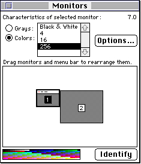
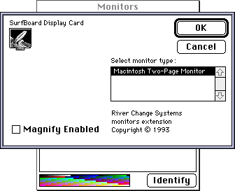

The Monitors Control Panel and Extensions to It
The standard Monitors control panel lets the user define the monitor's display of colors or shades of gray. If more than one monitor is connected to the system, the Monitors control panel also allows the user to define the relative position of each monitor and choose which monitor is the startup screen. If you are a manufacturer of a video card, you can create a monitors extension to give users a simple way to control the features of your device through the Monitors control panel. A monitors extension controls the features of your video card only, not systemwide features. For example, a monitors extension might allow the user to set the virtual screen size for a single monitor but not the size of the menu bar, which can appear on any monitor. If you require a more complex interface, such as your own menu items or several levels of nested dialog boxes, you should create a small application rather than an extension to the Monitors control panel.The Monitors control panel manages any extensions to it that you create, and the user can open an extension only through the Monitors control panel. Like a control panel file, a monitors extension file has a file type of
'cdev'. A monitors extension file contains resources for the monitors extension, including a code resource of type'mntr'. If you want to create a separate control panel to let the user control the settings of another feature of the same video card, you can include the control panel's resources and code in the same file as your monitors extension. In this case, you create the control panel just as you do any other independent control panel. If a user opens your independent control panel, the Finder displays the control panel defined in your file and ignores the monitors extension in that file, just as the Monitors control panel ignores the independent control panel defined in your file when it opens the file to display the monitors extension.The Monitors control panel allows a user to
Figure 8-4 shows an example of the Monitors control panel.
- select which one of the monitors connected to the computer to use as a startup screen (that is, which monitor displays the menu bar)
- inform system software about the relative locations of the monitors
- control some features of the monitors, for instance, how many colors or shades of gray are displayed
Figure 8-4 The Monitors control panel

If more than one video card is installed in the computer, the Monitors control panel shows all of the connected monitors. When the user selects one monitor, then clicks the Options button, the Monitors control panel displays the Options dialog box for that monitor. When you provide a monitors extension for the Monitors control panel, the controls you add appear in this dialog box.Figure 8-5 shows an example of an Options dialog box for the SurfBoard video card. The OK and Cancel buttons are standard for all Options dialog boxes. In this example, the developers of the SurfBoard video card have provided a monitors extension that adds two items to the the Options dialog box: the Magnify Enabled checkbox and static text listing the manufacturer's name.
Figure 8-5 An Options dialog box for the SurfBoard video card

A monitors extension file must contain these four resources:Your monitors extension file can also include any of the following resources:
- A card (
'card') resource. This resource contains a Pascal string identical to the name stored in the declaration ROM of the video card. You can include as many card resources as you like, so that one extension file can handle several types of video cards.- A monitor (
'mntr') code resource. This resource carries out the functions of your monitors extension.- A rectangle (
'RECT') resource. This resource describes the size and shape of the area that your controls occupy.- An item list (
'DITL') resource specifying the items in your monitors extension. You can also add additional controls, separated from other controls by a horizontal line, for the benefit of advanced users (superusers).
- One or more members of an icon family (
'ICN#','ics#','icl8','icl4','ics8', and'ics4'), each with resource ID -4064, that define an icon for your video card. If you provide any of these resources, the Monitors control panel displays the appropriate icon from the icon family in the upper-left corner of the Options dialog box.- Additional icon family resources to provide a unique icon for your monitors extension file.
- A version (
'vers') resource. This resource provides version information for your monitors extension.- A string list (
'STR#') resource defining one or more video card names. If you want the Options dialog box to display a name that is different from the one in the declaration ROM of the card, define the alternate name in an'STR#'resource.- One or more gamma table (
'gama') resources. Here you can include gamma tables that allow your video card to provide the most accurate colors possible.- A file reference (
'FREF') resource. This resource associates icons with your monitors extension file; the Finder uses this information to display the icon for your
monitors extension file.- A bundle (
'BNDL') resource. This resource groups together the monitor extensions' signature, icon, and file reference resources.- A system extension (
'INIT') resource. Although this resource acts independently of other resources in the file, it should be related to the monitors extension.- A signature resource (of type
'STR ').